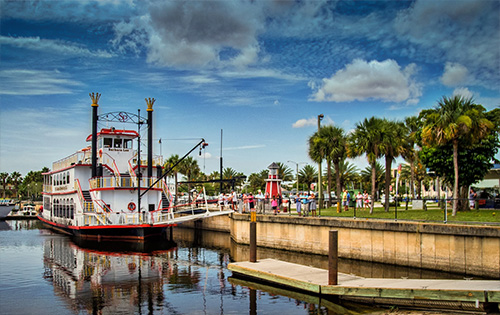
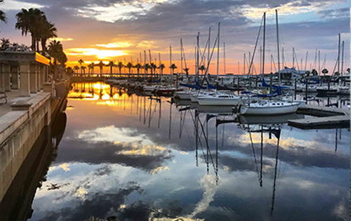
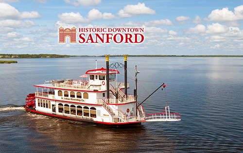

Conveniently located about halfway between the attractions of Orlando and the beaches and other allures of Daytona Beach, Sanford serves as the Florida home of the Auto Train and offers many treats of its own. Sanford, the seat of Seminole County, lies on the south shore of Lake Monroe at the head of navigation on the historic and beautiful St. Johns River. Experience the charm and ambience of Sanford's 19th-century buildings, pristine waterfront, unique shops and restaurants. Sanford's downtown riverwalk features antique and collectible shops, all located within a two-block radius of Magnolia Square. And, for entertainment, visit Sanford's restored Wayne Densch Performing Arts Center, one of Florida's newest facilities for the performing arts.
  Florida was acquired by the United States from Spain in 1821, but the Seminole Wars would delay settlement. In 1835, the Seminoles burned the port of Palatka on the St. Johns River, then the major artery into Central Florida from the East Coast. Consequently, an army garrison was established upstream, on the southern side of Lake Monroe near a trading post. Established as Camp Monroe in 1836, the camp was enclosed by log breastwork on three sides but open to the river, with approximately 300 men based there. The camp was attacked by Indians on February 8, 1837. It would be strengthened and renamed Fort Mellon in honor of Captain Charles Mellon, the sole American casualty.
In 1887, the city suffered a devastating fire, followed the next year by a statewide epidemic of yellow fever. When the Great Freeze of 1894 and 1895 ruined the citrus industry, farmers diversified by growing vegetables as well. Celery was first planted in 1896, and because of this Sanford is nicknamed the "Celery City."
In 1878, Mrs. Henry Sanford created the first library for public use in Sanford. A room was provided with a few books and a paid librarian. The initial library failed. In 1889, Mrs. Thrasher and Mrs. A.M. Deforest attempted to revive the library project with the aid of the Wednesday Club, the president, Mrs. Brown encouraged the women to begin fundraising efforts. The effort's fundraising progress was slow and sporadic. A Subscription library was established in a store front on First Street. Mrs. Duver was the librarian at this location. The library later moved to Magnolia Avenue next to the theatre at this location the library was run by volunteers. The library grew at this location, until it moved in 1914 to the Women's Club on Oak Avenue. An official Public Library was built and opened in 1924 on 5th Street. This library was supported by the City of Sanford.